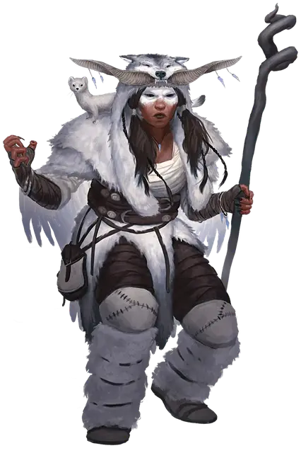

Морозный друид
Frost Druid
Средний Гуманоид (Человек), любое мировоззрение

Класс Доспеха 13 (шкурный доспех)
Хиты 67 (9к8 + 27)
Скорость 30 футов (40 фт. только в облике волка), летая 60 футов (только в облике совы), лазая 30 футов (только в облике козы), копая 5 футов (только в облике лисы)
| мод | спас | ||
|---|---|---|---|
| СИЛ | 12 | +1 | +1 |
| ЛОВ | 13 | +1 | +1 |
| ТЕЛ | 16 | +3 | +3 |
| мод | спас | ||
|---|---|---|---|
| ИНТ | 10 | +0 | +3 |
| МДР | 16 | +3 | +6 |
| ХАР | 9 | −1 | −1 |
Навыки Восприятие +6, Выживание +6, Природа +3
Сопротивление урону холод
Чувства тёмное зрение 60 футов (только в облике зверя), пассивное Восприятие 16
Языки Общий, Друидический
Опасность 5 (1800 опыта)
Бонус мастерства +3
Особенности
Использование заклинаний. Друид является заклинателем 9-го уровня. Его базовой характеристикой является Мудрость (Сл спасброска от заклинания 14, +6 к попаданию атаками заклинаниями). У него подготовлены следующие заклинания друида:
• Заговоры (неограниченно): искусство друидов [druidcraft], сопротивление [resistance], указание [guidance];
• 1-й уровень (4 ячейки): дружба с животными [animal friendship], разговор с животными [speak with animals], туманное облако [fog cloud];
• 2-й уровень (3 ячейки): бесследное передвижение [pass without trace], лунный луч [moonbeam], почтовое животное [animal messenger];
• 3-й уровень (3 ячейки): метель [sleet storm], призыв животных [conjure animals], стена ветров [wind wall];
• 4-й уровень (3 ячейки): град [ice storm], мираж [hallucinatory terrain];
• 5-й уровень (1 ячейка): пробуждение разума [awaken].
Действия
Мультиатака. Друид совершает две рукопашные атаки.
Ледяной серп (только в облике гуманоида). Рукопашная атака оружием: +4 к попаданию, досягаемость 5 фт., одна цель. Попадание: 3 (1к4 + 1) рубящего урона плюс 5 (2к4) урона холодом.
Растерзание (только в облике зверя). Рукопашная атака оружием: +4 к попаданию, досягаемость 5 фт., одна цель. Попадание: 3 (1к4 + 1) колющего урона.
Смена формы. Друид магическим образом превращается в лису [fox], горного козла [mountain goat], сову [owl], волка [wolf] или принимает свой истинный облик. Любое снаряжение носимое или несомое друидом поглощается или переносится обликом зверя (по выбору друида). Он принимает форму гуманоида когда умирает. Все характеристики друида остаются одними и теми же в каждой форме, кроме исключений, указанных в этом блоке статистики.
Описание
Морозные друиды — одинокие защитники природы и естественные враги цивилизации Севера. Они стремятся сохранить арктическую природу, уничтожая чужаков, которые встречаются на их пути. Каждый из них патрулирует свою территорию в обликах песца, горного козла, снежной совы или волка, возвращаясь к человеческому облику только во время нападения. Для организации умных засад они используют заклинание мираж [hallucinatory terrain]: создают иллюзорные сугробы, под которыми они могут спрятаться, или покрывают снегом тонкий лёд водоемов, чтобы сквозь него в воду провалились чужаки.
Пробуждённые напарники. Морозного друида часто сопровождают один или несколько пробуждённых зверей, кустов или вечнозеленых деревьев, которых друид наделил разумом с помощью заклинания пробуждение разума [awaken]. В качестве соратников друиды особенно предпочитают белых медведей [polar bear] и северных оленей [reindeer], и они обычно разделяют мировоззрение друида.
Ледяной серп. Морозный друид может вырезать серп изо льда, что требует в общей сложности 24 часа работы. Сильный холод гуляет в этом оружии, пока оно находится в руках друида. Когда друид умирает, ледяной серп тает. В остальном оружие идентично обычному серпу